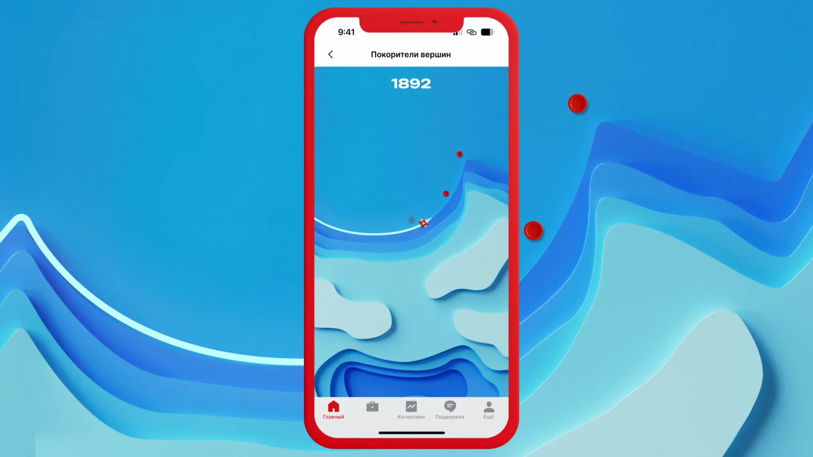
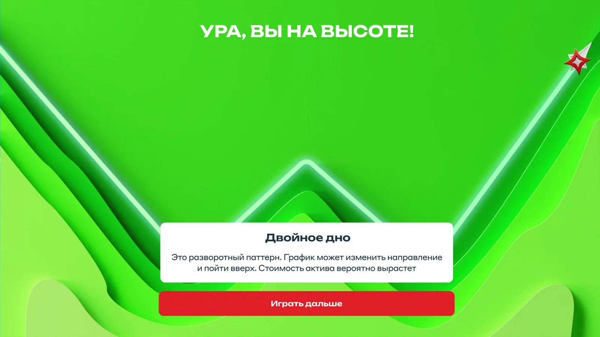
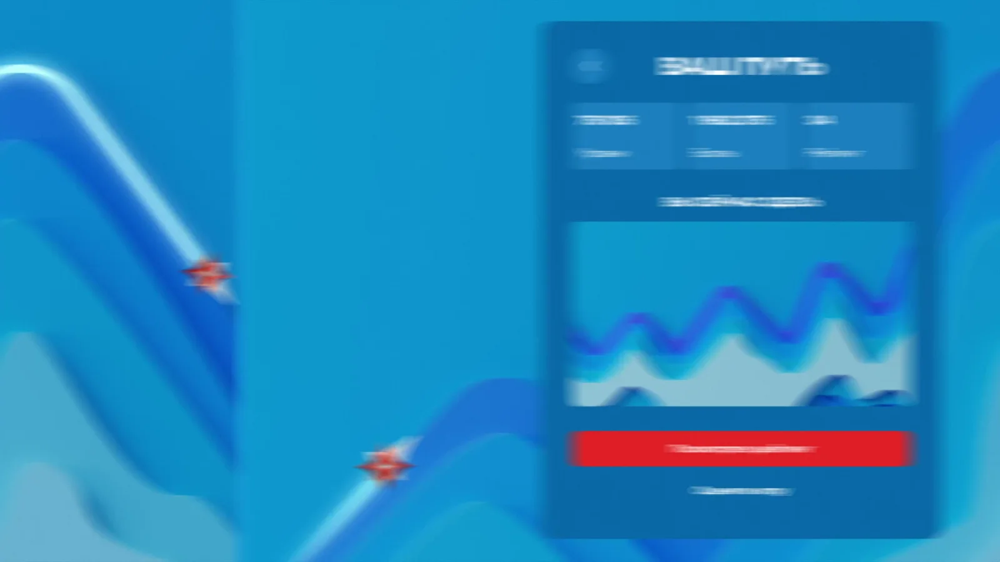
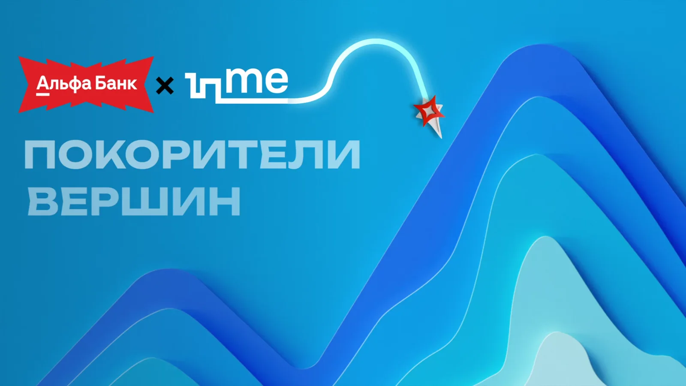

Сделать биржевые паттерны понятными
Финансовая тема переводится из абстрактного графика в наглядную пространственную модель, которую пользователь может буквально пройти.
Alfa Bank · Game design · Investment education
Игра, которая превращает графики биржевых паттернов в горные маршруты и помогает освоить инвестиционную логику через движение, скорость и соревнование.
О проекте
Сложные паттерны акций переводятся в понятную игровую метафору: вершины, подъёмы, маршруты и скорость прохождения.
Игрок не просто получает теорию, а проживает форму графика через движение персонажа и соревновательный ритм.
CASE BREAKDOWN / INVESTMENT GAME
Финансовая тема переводится из абстрактного графика в наглядную пространственную модель, которую пользователь может буквально пройти.
Каждый паттерн получает собственный рельеф. Подъём к вершине визуально повторяет движение графика и помогает запомнить его форму.
Участник проводит персонажа по маршруту и «накликивает» путь до вершины. За успешное прохождение он получает баллы за скорость и один из офферов Альфа-Инвестиций.
Рейтинг превращает обучающую механику в соревнование и стимулирует повторные прохождения.



